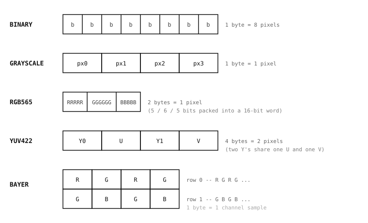

5.3. 像素格式¶
检测边缘的算法期望每个像素保存一个亮度值。跟踪有色物体的算法期望每个像素携带颜色。执行形态学闭运算的算法期望每个像素要么开、要么关。一个 Image 所携带的像素格式——枚举出的视觉传感器目录之一——正是让这些期望能够事先被检验的依据：格式预先说明了像素的形态，从而表明哪些算法可以在无需转换步骤的情况下对其运行。
本页讨论这一约束在实践中如何发挥作用。哪种格式是正确选择取决于流水线将要做什么，而不同格式之间的转换方法，正是需要用到多种格式的流水线将各个阶段串联起来的方式。

五种未压缩的像素格式及其字节的打包方式。这里没有画出 JPEG 和 PNG，因为它们是可变长度的压缩流，而非固定大小的像素网格。¶
5.3.1. 灰度主力格式¶
经典机器视觉的大部分内容归根结底都是在处理亮度值。边缘检测、模板匹配、AprilTag 解码、光流估计、形态学运算符、色块分析——所有这些，在算法实际运作的层面上，看的都是每个像素有多亮，以及该亮度与邻近像素亮度的比较。场景的颜色对调用它们的应用程序往往有用，但算法本身并不需要它。
灰度格式将算法所需的恰好交给它们，而没有任何额外开销。每个像素一个字节，保存从 0（黑）到 255（白）的亮度值。该格式是 RGB565 和 YUV422 的一半大小，是 RGB888 的三分之一大小，因此每个操作都经过更少的数据——既更快，缓冲区压力也更小。在较小的摄像头上，帧缓冲区要与脚本的其余部分争夺 RAM，这种占用差异有时正是决定一条流水线是否能够装得下的关键。如果颜色不是算法所需的线索，那么灰度就是正确答案。
5.3.2. 通过 RGB565 表达颜色¶
当颜色确实是线索时——跟踪有色标记、区分红苹果和青苹果、按色调挑出某个 UI 元素——每像素两个字节足以提供这些算法所执行的各类分类所需的颜色。RGB565 是摄像头上默认的颜色格式，也是各类颜色感知方法在接口上所期望的格式。
渲染带注释的帧——绘制检测框、写入诊断文本、将帧显示到屏幕上或发送给远程查看器——同样自然地需要 RGB565。IDE 预览、板载显示控制器以及大多数网络目的地，要么直接使用该格式，要么以低成本从它转换。
5.3.3. Bayer 作为存储格式¶
Bayer 图像是原始的传感器输出，是在 ISP 将其去拜耳化为成品颜色表示之前的形态。每个像素是一个字节，保存单一颜色通道——即马赛克中该位置的颜色滤镜所透过的那一个通道。这使得 Bayer 图像与灰度图像大小相同，是 RGB888 的三分之一大小，这与 Bayer 实际有用之处正好契合：在 RAM 是约束条件时一次性存储许多帧。
问题在于 image 模块中的算法不会直接对 Bayer 图像进行运算。没有去拜耳化，任何单个像素都不携带足够的信息来独立做出颜色判断，而算法所要寻找的模式——边缘、角点、色块——会被马赛克所扭曲。读取或修改 Bayer 图像的唯一方式是 get_pixel() 和 set_pixel()；其他一切都期望成品表示。
由此自然产生的模式是：在帧需要排队等待的整段时间里将其存储为 Bayer，并在每一帧实际开始处理的那一刻将其转换为灰度或 RGB565。这种转换会消耗 CPU 周期，但节省了在应用程序整个生命周期内本应被用于保存成品帧的 RAM。
备注
image 模块直接对 Bayer 像素的运算只有 get_pixel()、set_pixel()，以及为 IDE 预览或远程查看器供给数据的 JPEG 编码路径。绘制、分析和滤波都要求先转换为灰度、RGB565 或二值格式。
5.3.4. 为同时兼顾两者的流水线提供的 YUV422¶
YUV422 将每个像素的信息分离为一个亮度通道（Y）和两个色度通道（U 和 V），并对色度进行子采样，使相邻的像素对共享单个 U 和单个 V。每像素的字节数平均为二——与 RGB565 相同——但它们的布局方式使得 Y 通道本身已经是一幅连续的 8 位灰度图像，位于缓冲区中已知的偏移处。
当一条流水线的某些阶段做灰度工作而某些阶段需要颜色时，这种布局正是它想要的。为灰度阶段直接读取 Y 值省去了显式转换的成本；当稍后某个阶段确实需要颜色时，U 和 V 通道就在那里。在那个特定模式之外，对于颜色，RGB565 通常是更简单的选择，对于仅需亮度的工作，灰度是更简单的选择——YUV422 的价值来自于同时擅长两者。
备注
image 模块对 YUV422 的运算比对灰度、RGB565 或二值格式更为有限——为灰度工作直接读取 Y 通道，以及为 IDE 预览或远程查看器供给数据的 JPEG 编码路径。颜色感知方法期望 RGB565；YUV422 帧在进行颜色分析或绘制之前需要一次显式转换。
5.3.5. 二值图像、掩膜与阈值化输出¶
二值图像是每像素一个比特：每个像素要么是 0，要么是 1。该格式很少作为传感器捕获而出现；相反，它作为阈值化的自然输出（其中颜色或亮度测试将每个像素分类为“是，匹配”或“否，不匹配”）出现，并作为形态学运算以及许多方法所接受的 mask 参数的自然输入而出现。
该格式的实际优势在于其大小。二值图像的占用是灰度图像的八分之一，因此随身携带一个大掩膜——一个关于下游某个操作应触碰哪些位置的逐像素选择——成本很低。许多操作接受二值图像作为 mask= 关键字参数，这是同一论点的另一面：该格式很小，而把一个阶段的二值输出链接到另一个阶段的掩膜输入是一种常见的流水线模式。
5.3.6. 处于边界处的 JPEG 和 PNG¶
JPEG 和 PNG Image 对象与目录中的其他对象不同。它们不是像素网格；它们是压缩的字节流，以一种像素级操作无法读取的形式编码像素数据。对一个 JPEG 调用 get_pixel() 不会返回某个位置上的像素；像素并未在缓冲区中的任何地方以解包形式存在，供该方法获取。
JPEG 和 PNG 出现在图像处理的边界处，即像素数据以压缩形式离开或进入摄像头的地方。将一帧以 JPEG 形式保存到磁盘可使文件保持很小；将一帧以 JPEG 形式通过网络发送可使传输保持低成本；从一个 JPEG 文件加载一个参考帧，使其在磁盘上以比原始像素小得多的形式存放。对于上述任何用例，压缩表示都是正确答案。不过，要对一个 JPEG 做任何实际处理，应用程序都会先将其转换为可用格式——而那次转换正是压缩字节被展开为像素之处，也是缓冲区膨胀（一个 30 KB 的 JPEG 可能变成 600 KB 的 RGB565）实际发生之处。
5.3.7. 格式之间的转换¶
转换路径正是把不同格式缝合进单条流水线的方式。Image 类上有五个方法接受一个现有图像并返回一个不同格式的新图像：
to_grayscale()生成一幅每像素单字节的图像，即经典算法想要的格式。to_rgb565()生成每像素两字节的颜色格式，颜色感知方法和 IDE 预览都使用这种格式。to_bitmap()生成一幅每像素一比特的二值图像，即形态学和mask参数所接受的格式。to_jpeg()生成一幅 JPEG 压缩图像，适合保存或传输。to_png()在偏好无损编码而非 JPEG 更小文件时，生成一幅 PNG 压缩图像。
默认情况下，每次转换都就地运行：源图像的缓冲区被转换结果覆盖，调用返回后源图像的原始像素就消失了。这在 CPU 和内存两方面都是最廉价的选项，当源帧不会再用于其他任何用途时，它就是正确答案。
当源帧仍然被需要时——当流水线的后续阶段必须看到原始帧时——两个关键字参数会覆盖就地这一默认行为。copy=True 在 Python 堆上为转换后的图像分配一个单独的缓冲区，并使源帧保持完整。copy_to_fb=True 做同样的分配，但将其放入帧缓冲区而非堆中——当转换后的图像需要进入 IDE 预览时，应用程序就会用到它，因为 IDE 从帧缓冲区读取。
另外两个方法生成 RGB565 图像，其颜色是通过一个调色板而非直接转换得到的。to_rainbow() 将每个单通道输入值映射到一条贯穿可见光谱的平滑渐变上的某种颜色。to_ironbow() 将每个输入值映射到那种从黑色经深红和橙色到白色的非线性热成像仪调色板。两者都是可视化工具而非测量工具；其目的在于使一幅单通道图像——其原始值本来对肉眼不可见——能够一眼读懂。
5.3.8. 缓冲区大小¶
关于格式还有最后一个细节值得明确说明。size() 始终报告字节缓冲区大小，而非像素数量。对于未压缩格式，它直接由尺寸和每像素字节数得出：width * height * bytes_per_pixel。对于 JPEG 和 PNG，它是压缩流的大小，会随帧而变化，取决于场景包含什么内容。从字节预算分配缓冲区的代码在前一种情况下使用 size()；从摄像头流式输出压缩帧的代码在每次压缩后读取它，以得知流实际包含多少字节。